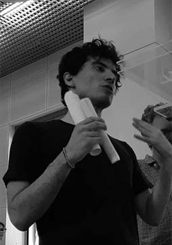

An idea is salvation by imagination
ABOUT ME
 Getting into the profession of architecture for me, as the meaning of the word profess implies, transcends the technical skills and represents a special kind of devotion, a vow.As a young architect groping for meaningful work, inspired by the works of Kahn, Ando and Zumthor, I became enamored with the spiritual qualities of architecture that manifest through materiality, scale, and light and the way they shape and connect to a sense of self-transcendence and collective awareness. This is particularly important today because the way architecture addresses the need for personal meaning is hard to identify within the urban fabric. Through my current studies in TU Delft, I firmly believe that I will be able to cultivate a uniquely purposeful and highly technological design that will place my signature in the future industry.
Academic Background
TU Delft
Master Architecture, Urbanism and Building Sciences 2023
National and Technical University of Athens (NTUA)
Diploma in Architecture Engineering, 5 years joint degree equivalent to BArch and Master 300 ECTS 2019
Work Experience
Stavros Niarchos Foundation Cultural Center (SNFCC) Architectural Internship
Conceptualization and design of architectural maps of the premises to enrich the visitors experience 2020
WIP-Elena Laina Architectural Office
Junior architect in the design development of residential projects from conceptual to construction phase 2018
ESPA Architectural Internship
On-site research, documentation and analysis of historical monuments and settlements in Greece 2013
Publications/Workshops
ASCF 12 Symposium held at Frank Lloyd’s Wright’s Fallingwater, Pennsylvania
Presentation and publication of 'Shared Sacred Space: A secular and sacred cross section of society' 2022
GRAD review magazine - 2019 Architectural Thesis Competition
Awarded a distinction as one of the equally assesed top 5 architectural thesis projects 2020
ICGG 2018 at Politecnico di Milano, Department of Architecture and Urban Studies (DASTU)
Conference presentation of 'Logicometry: Graphical Representations of Logical Space Interrelations' and publication in Advances in Intelligent Systems and Computing, Springer 2018
Domés International Review of Architecture magazine
Exhibition of the 'new dining place' at Benaki Museum Pireos 2018
XAtelier Workshop 'XIORNAMENTISM' held at Benaki Museum of Athens led by Erick Carcamo
Presentation and Exhibition of my project “EXO-OSSEA” at Benaki Museum Pireos 2013
Competitions
Architectural competition 'LYCABETTUS PAN.ORAMA' 2020
RIBA Architecture The LowLine Design Competition 2019
Domés International Design Competition “COOK 8” 2018
Residential design Competition via Arcbazar 2018
International Competition for Horse Park in Yeongcheon, Korea
2016
Visitor’s Center for Stavros Niarchos Foundation Cultural Center 2013
Software Skills
Interests
Painting
Free hand sketching, oil and acrylic painting on canvas
Model making
3D printing, experimenting with new materials, crafts & DIY’s
Photogrammetry
Creating 3D visualizations and volumetric models with drone and LIDAR scanning
PROJECTS